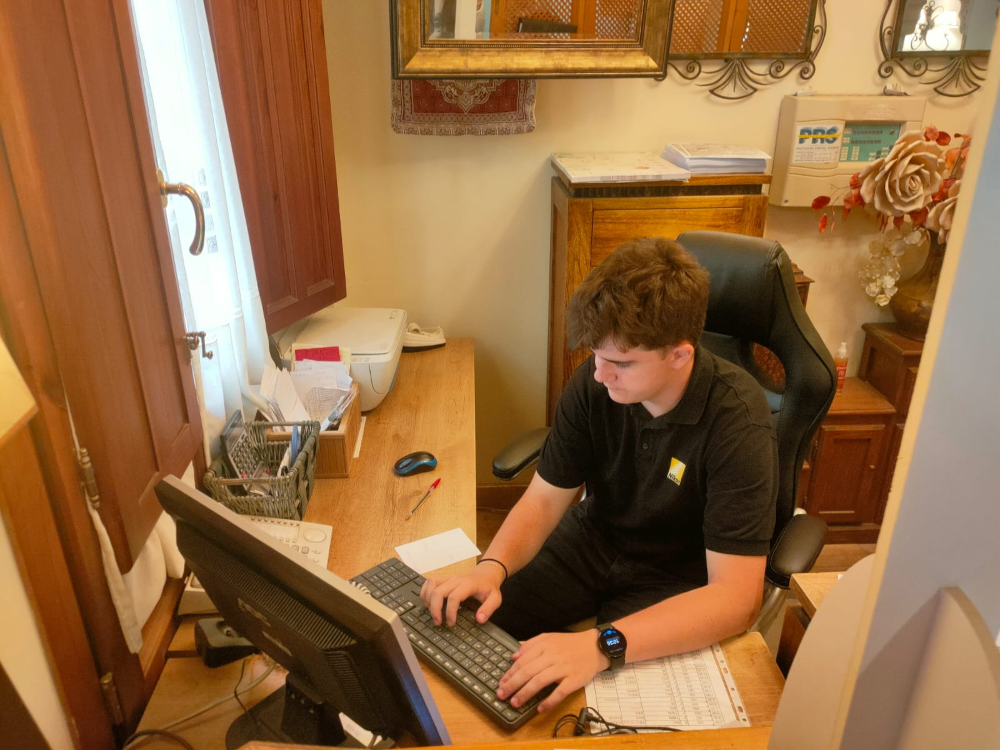
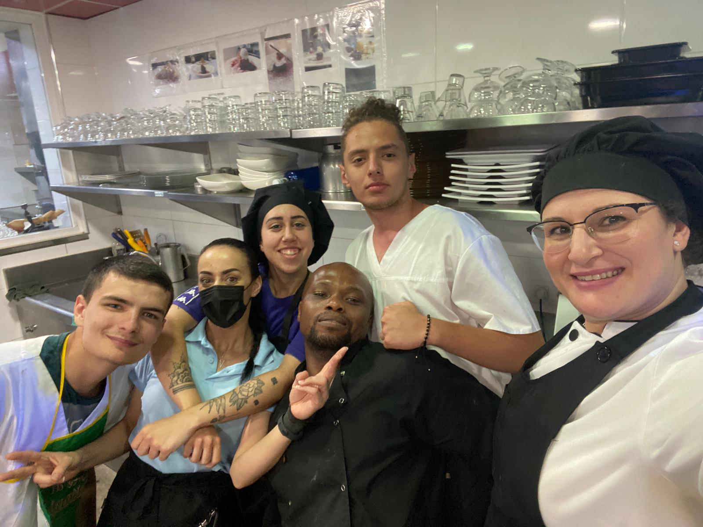
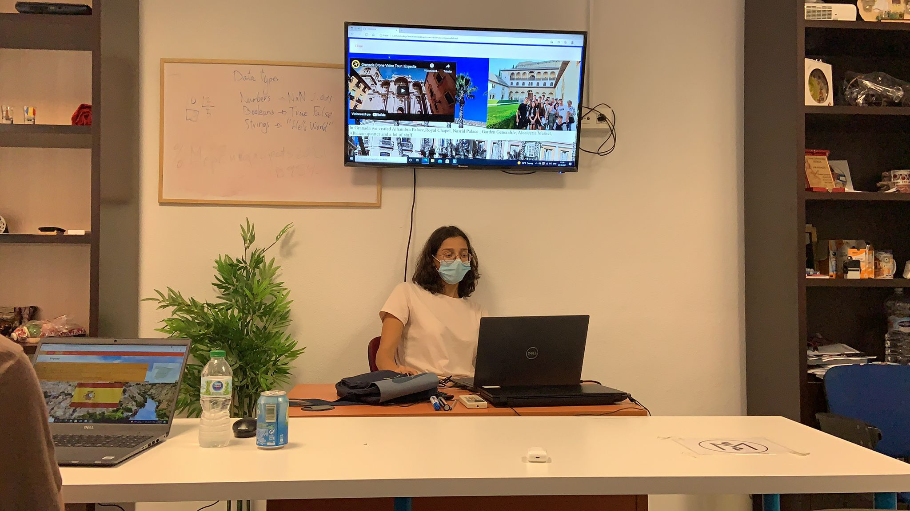

\


Colegiul Vasile Lovinescu îşi propune, ca, prin educaţia formală şi nonformală practicată, să dezvolte, în rândul elevilor, competenţe cheie pentru dezvoltare durabilă, la nivelul cerinţelor europene: competenţe lingvistice, digitale, personale, sociale şi de învăţare, civice, ştiinţifice şi antreprenoriale. Încă de la înfiinţare (1924) până în prezent, unitatea şcolară pregăteşte tineri pentru diverse specializări: turism şi alimentaţie, economic, protecţia mediului, agricultură, industrie alimentară, silvicultură, automatizări şi calculatoare, construcţii, mecanică, matematică - informatică, ştiinţe sociale.
Stagiile de practică în companii sunt instrumente de dezvoltare profesională, integrare socială şi participare la o economie bazată pe cunoaştere. Acestea asigură dezvoltarea unor abilităţi personale şi profesionale în afara cadrului oficial al şcolii şi cresc şansele tinerilor de a-şi dezvolta noi competenţe necesare la locul de muncă. Un stagiu de practică la o companie poate însemna un start de succes în carieră, şansa de a cunoaşte şi lucra alături de profesionişti în domeniu într-un mediu de lucru multicultural.
În contextul unui mediu globalizat este absolut necesar ca elevii să poată valorifica toate oportunităţile de învăţare existente în întreaga UE. Mobilităţile VET încurajează dobândirea de cunoştinţe, abilităţi, competenţe pentru participarea activă în societate şi pe piaţa muncii.
Povestea Erasmus+ a început din ambiţia şi cutezanţa unei echipe de proiect care a dorit să vină în sprijinul unui număr cât mai mare de elevi ce vor să afle cât mai multe despre cele mai bune sisteme educaţionale şi despre universul meseriilor. Deseori tinerii aleg o meserie pentru că „sună bine” sau pentru că prietenii lor decid să urmeze aceeaşi carieră.
Derularea proiectului Erasmus+, nr. 2020-1-RO01-KA102-078817, ” Tehnologiile IT în specializările VET”, a însemnat provocare, deschidere spre cunoaştere şi colaborare, conştientizarea faptului că lucrurile în care pui suflet reuşesc întotdeauna.
În perioada 27 septembrie – 9 octombrie 2021 a avut loc prima mobilitate din cadrul proiectului. Cei 14 elevi, de la profilul matematică-informatică, au desfăşurat două săptămâni de stagiu la două firme cu profil IT din Granada, Spania. Beneficiarii, sub îndrumarea tutorilor, au creat o platformă web, cu aplicabilitate pentru stagiile de practica pe domeniul Turism şi alimentaţie, unde elevii vor avea acces la materiale teoretice, cursuri de limba specifice domeniului de activitate, informaţii culturale, instrumente de monitorizare şi evaluare.
Stagiarii de la calificarea Tehnician în hotelărie şi-au desfăşurat instruirea practică în unităţi de primire din Granada, Spania, în perioadele 6-24 iunie 2022 şi 5 – 23 septembrie 2023. Tinerii practicanţi au desfăşurat activităţi specifice departamentului Front-Office, a sectorului Concierge, departamentului de etaj, departamentelor Food şi Room – service.
Trei săptămâni în care s-au maturizat, s-au cunoscut cu adevărat, au învăţat să lucreze în echipă, cu termene limită, să fie punctuali, responsabili.

